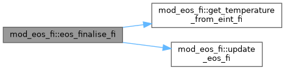
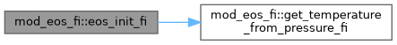

|
MPI-AMRVAC 3.2
The MPI - Adaptive Mesh Refinement - Versatile Advection Code (development version)
|
FI (fully-ionised, constant-gamma) EoS kernels for the eos% family. More...
Functions/Subroutines | |
| subroutine, public | eos_init_fi () |
| get_Te_FI is PRIVATE: bound to eosget_Te inside eos_finalise_FI only. The rest stay public: update_eos_FI (ffhd_phys), get_gamma1_FI (the seam phys_get_gamma1), get_temperature_from_{eint,pressure}_FI (reused by mod_eos_PI), and the init/finalise dispatcher arms. | |
| subroutine, public | eos_finalise_fi () |
| FI arm of eos_finalise: wire the ideal-gas getter set and the fully-ionised particle counts (2 + 3*A_He per H; ne/nH = 1 + 2*A_He). No tables to load. | |
| subroutine, public | update_eos_fi (ixil, ixol, w, x) |
| FI update_eos: nothing to cache for an ideal gas. Called each RK substep. | |
| subroutine, public | get_gamma1_fi (w, x, ixil, ixol, gamma1) |
| Gamma_1 for the fully-ionised ideal gas: constant eosgamma. | |
| subroutine, public | get_temperature_from_eint_fi (w, x, ixil, ixol, res) |
| Temperature from internal energy, fully-ionised ideal gas: T = pth/(rho*R). | |
| subroutine, public | get_temperature_from_pressure_fi (w, x, ixil, ixol, res) |
| FI temperature from primitive pressure: T = p / (R * rho). w is PRIMITIVE here, so iw_e holds the thermal pressure. Lives in the EoS so hd and mhd share one routine (replaces the orphaned, never-called hd_get_temperature_from_prim that used to sit in mod_hd_phys). | |
FI (fully-ionised, constant-gamma) EoS kernels for the eos% family.
Carved out of mod_eos.t (the per-type split). The fully-ionised ideal gas: p = (gamma-1) eint, constant Gamma_1 = gamma, temperature T = p/(R rho) with R the constant ionisation R-factor. update_eos is a no-op (nothing cached). mod_eos re-exports the public names so existing use mod_eos callers are unaffected; eos_finalise wires these as the FI pointer targets.
| subroutine, public mod_eos_fi::eos_finalise_fi |
FI arm of eos_finalise: wire the ideal-gas getter set and the fully-ionised particle counts (2 + 3*A_He per H; ne/nH = 1 + 2*A_He). No tables to load.
nothing cached for ideal gas
Definition at line 40 of file mod_eos_FI.t.

| subroutine, public mod_eos_fi::eos_init_fi |
get_Te_FI is PRIVATE: bound to eosget_Te inside eos_finalise_FI only. The rest stay public: update_eos_FI (ffhd_phys), get_gamma1_FI (the seam phys_get_gamma1), get_temperature_from_{eint,pressure}_FI (reused by mod_eos_PI), and the init/finalise dispatcher arms.
FI arm of eos_init (before units are known): wire the FI temperature-from-pressure getter, which must be live before (m)hd_link_eos captures it into the radiation fluid object.
Definition at line 34 of file mod_eos_FI.t.

| subroutine, public mod_eos_fi::get_gamma1_fi | ( | double precision, dimension(ixi^s, nw), intent(in) | w, |
| double precision, dimension(ixi^s, 1:ndim), intent(in) | x, | ||
| integer, intent(in) | ixi, | ||
| integer, intent(in) | l, | ||
| integer, intent(in) | ixo, | ||
| l, | |||
| double precision, dimension(ixi^s), intent(out) | gamma1 | ||
| ) |
Gamma_1 for the fully-ionised ideal gas: constant eosgamma.
Definition at line 56 of file mod_eos_FI.t.
| subroutine, public mod_eos_fi::get_temperature_from_eint_fi | ( | double precision, dimension(ixi^s,1:nw), intent(in) | w, |
| double precision, dimension(ixi^s,1:ndim), intent(in) | x, | ||
| integer, intent(in) | ixi, | ||
| integer, intent(in) | l, | ||
| integer, intent(in) | ixo, | ||
| l, | |||
| double precision, dimension(ixi^s), intent(out) | res | ||
| ) |
Temperature from internal energy, fully-ionised ideal gas: T = pth/(rho*R).
| [in] | ixi | Assumes input energy is internal energy |
| [in] | l | Assumes input energy is internal energy |
| [in] | ixo | Assumes input energy is internal energy |
| [in] | l | Assumes input energy is internal energy |
pth/rho
Definition at line 83 of file mod_eos_FI.t.
| subroutine, public mod_eos_fi::get_temperature_from_pressure_fi | ( | double precision, dimension(ixi^s,1:nw), intent(in) | w, |
| double precision, dimension(ixi^s,1:ndim), intent(in) | x, | ||
| integer, intent(in) | ixi, | ||
| integer, intent(in) | l, | ||
| integer, intent(in) | ixo, | ||
| l, | |||
| double precision, dimension(ixi^s), intent(out) | res | ||
| ) |
FI temperature from primitive pressure: T = p / (R * rho). w is PRIMITIVE here, so iw_e holds the thermal pressure. Lives in the EoS so hd and mhd share one routine (replaces the orphaned, never-called hd_get_temperature_from_prim that used to sit in mod_hd_phys).
Definition at line 105 of file mod_eos_FI.t.
| subroutine, public mod_eos_fi::update_eos_fi | ( | integer, intent(in) | ixi, |
| integer, intent(in) | l, | ||
| integer, intent(in) | ixo, | ||
| l, | |||
| double precision, dimension(ixi^s,1:nw), intent(inout) | w, | ||
| double precision, dimension(ixi^s,1:ndim), intent(in) | x | ||
| ) |
FI update_eos: nothing to cache for an ideal gas. Called each RK substep.
Definition at line 49 of file mod_eos_FI.t.